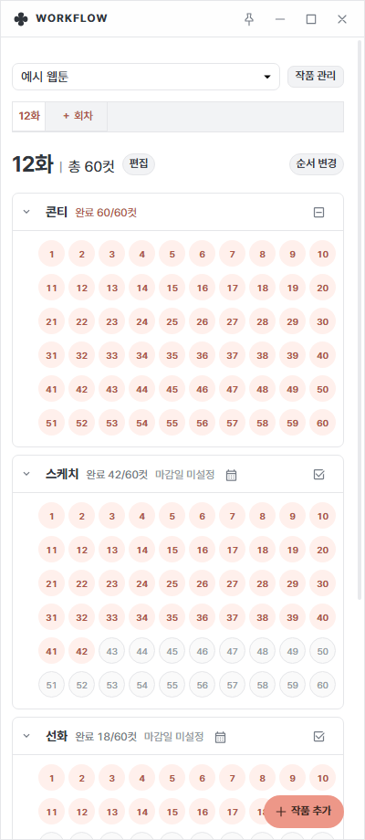
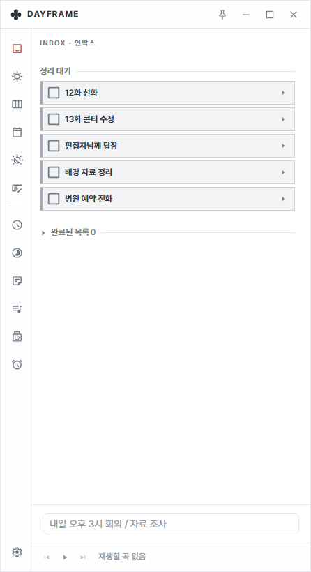
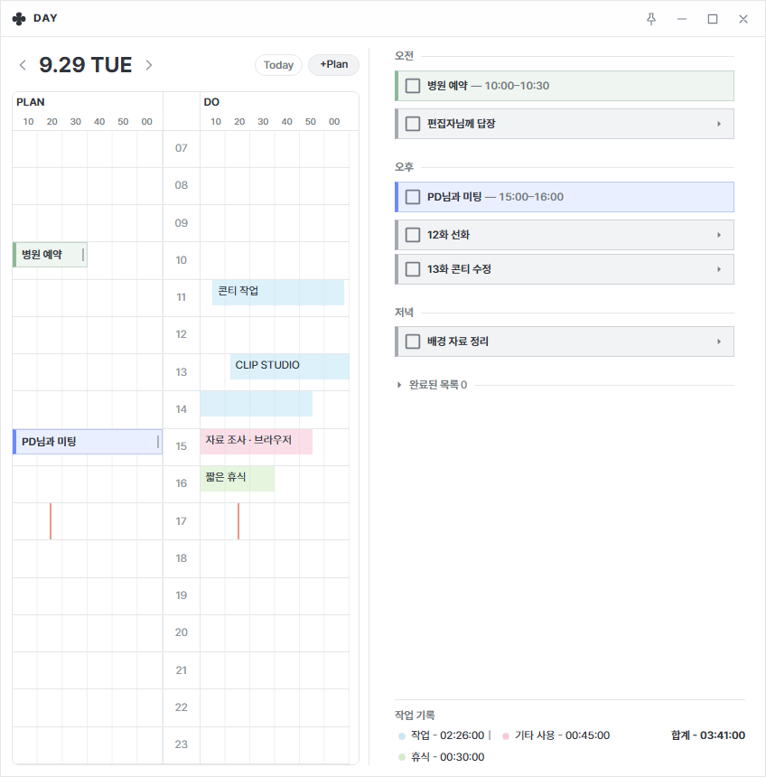
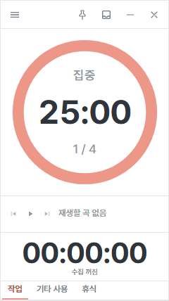
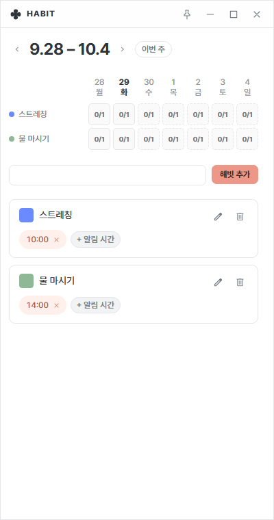
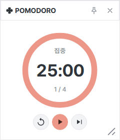
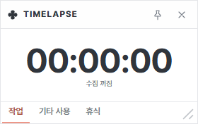
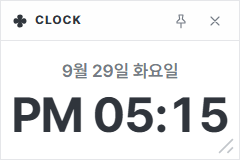
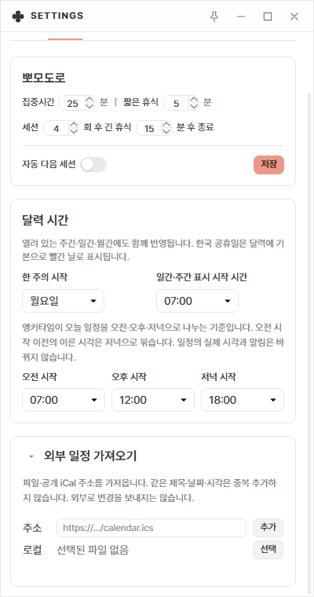
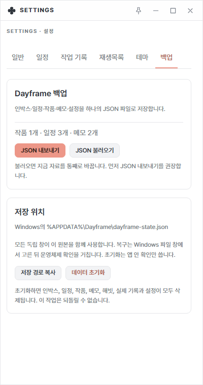

Workflow
작품과 회차를 만들고, 콘티·스케치·선화·채색 같은 공정별로 컷 번호를 눌러 진행 상황을 체크합니다. 자세히 보기 →
사용법
웹툰 작업 중에 바로 열어 볼 수 있게 짧게 정리했습니다.
코드 서명이 없어 처음 한 번 이 안내가 나타납니다.
.dmg 파일을 열어 앱을 응용 프로그램 폴더에 옮깁니다.xattr -cr /Applications/Dayframe.app을 실행합니다.맥 버전은 자동 설치를 지원하지 않습니다. 새 버전이 나오면 앱이 알려 주며, 설치 파일을 직접 내려받아 설치하세요.
순서는 적기 → 시간대 정하기 → 시간 배치입니다. 시간까지 못 정한 일은 시간대만 정해도 됩니다.
앱을 켜면 인박스가 열립니다. 아래 입력창에 떠오른 일을 적고 Enter를 누르면 ‘정리 대기’ 목록에 쌓입니다.
언제 할지, 얼마나 걸릴지는 지금 정하지 않아도 됩니다.

왼쪽 레일에서 일간 창을 엽니다. 오른쪽에 오전·오후·저녁 칸이 있습니다. 할 일을 원하는 칸으로 끌어다 놓으면 대략적인 시간대가 정해집니다.

병원이나 미팅처럼 시간이 정해진 일정만 일간 창의 왼쪽 PLAN 칸에 넣습니다. 상단의 +Plan 버튼으로도 추가할 수 있습니다.
오른쪽 DO 칸에는 실제로 한 작업 기록이 색으로 쌓입니다. 작업 기록은 설정 → 작업 기록에서 수집을 켠 뒤부터 모입니다.
왼쪽 세로 레일의 아이콘으로 필요한 창만 꺼내 쓰고, 트레이 아이콘을 우클릭해도 같은 창을 열 수 있습니다.

작품과 회차를 만들고, 콘티·스케치·선화·채색 같은 공정별로 컷 번호를 눌러 진행 상황을 체크합니다. 자세히 보기 →

인박스 창이 타이머만 남은 작은 창으로 바뀝니다. 트레이 메뉴의 ‘포커스 모드’로 켭니다.
작업 중 떠오른 내용을 #태그와 함께 적어 두고, 태그로 골라 봅니다.

반복할 습관을 등록하고 알림 시간을 정해 요일별로 체크합니다.

집중 25분과 휴식을 반복하는 타이머입니다.

작업·기타 사용·휴식으로 나누어 시간을 잽니다.

날짜와 시간을 크게 보여 주는 시계입니다.
YouTube 재생목록을 작업 공간에서 재생합니다. 재생목록은 설정 → 재생목록에서 등록하며, 이 기능만 인터넷 연결이 필요합니다.
쓰고 있는 캘린더의 일정을 Dayframe 일정으로 가져옵니다. 가져오기 전용이라 Dayframe에서 고친 내용은 원래 캘린더로 전송되지 않습니다.
https://…/calendar.ics)를 붙여 넣고 추가를 누릅니다. Enter를 눌러도 됩니다..ics 파일을 선택해 가져옵니다. 2MB 이하 파일만 가져올 수 있습니다.https로 시작하는 공개 주소여야 하고, 로그인이 필요한 주소는 읽지 못합니다.
Windows에서는 %APPDATA%\Dayframe\dayframe-state.json 하나에 저장됩니다. 외부 계정에 올라가지 않고 모든 창이 이 파일을 함께 씁니다.
설정 → 백업 → JSON 내보내기로 파일을 저장합니다. PC를 바꾸거나 다시 설치했다면 JSON 불러오기로 되돌립니다. 불러오면 지금 자료가 통째로 바뀌니 먼저 내보내기를 해 두세요.

코드 서명이 없어서 나타나는 안내입니다. Windows는 추가 정보 → 실행, 맥은 앱 우클릭 → 열기로 실행하세요.
새 버전이 나오면 앱이 안내합니다. 업데이트 전에 백업 파일을 저장하도록 권하며, 건너뛸 수도 있습니다. 맥은 자동 설치가 없어 안내에 따라 설치 파일을 직접 내려받아 설치합니다. 모든 버전은 릴리스 페이지에서 받을 수 있습니다.
아니요. 가져오기 전용이라 Dayframe에서 고친 내용이 원래 캘린더로 전송되지 않습니다. 원본이 바뀌어도 자동으로 다시 가져오지 않으니, 최신 내용이 필요하면 다시 추가를 누르세요.
작업 기록은 기본적으로 꺼져 있습니다. 설정 → 작업 기록에서 수집을 켜세요.
인박스·일정·작품·메모·해빗·기록과 설정이 모두 삭제되고 되돌릴 수 없습니다. 반드시 먼저 JSON 내보내기로 백업하세요.
앱의 설정 화면에 버그 신고와 사용 후기 링크가 있습니다.